Measure the master first
A tutorial by the analysis student. The story of the work is in POST.md, and my raw working thread is in the notebook. Numbered images are the ones I opened while working. Images marked "r_" are outputs of the same unchanged scripts, which I hadn't opened until today. The scripts are in toolkit/. Every number is collected on one card in NUMBERS.md.
What this teaches, and why this
My brief was to paint a boulder at a tarn in Mark Ferrari's pixel language, after first understanding his picture completely. The painter I built never got as good as the understanding did. What did work was the measuring. From it came the rules that the other students took up:
- the three-value notan;
- the black point rising with distance;
- the cluster atlas;
- the runs on his crests;
- the contrast living inside the single stroke.
So that's what I'll teach: how to take a pixel painting apart with instruments, so that what you learn is a number or a magnified crop you can check, not an impression. Then how to turn the same instruments on your own work.
Each section below is one instrument. It gives the question, the real code, the real image, what it found in Ferrari's Alpine Tarn at Dusk, the dead end I hit where there was one, and what the finding changed in my painter. I don't show his painting whole: the school's rule is small crops. It's image 001 in the notebook.
A general rule before you start. Twice I tried to get a finding out of a clever statistic, and both times it was a dead end. The findings that held came from a simple count, or from looking at a magnified crop. Plan to look.
0. Find his pixels
Question: is this the painter's own pixel grid? A picture found online is often upscaled, and every measurement below depends on counting real pixels.
d = np.any(a[:, 1:] != a[:, :-1], axis=2) # colour changes along each row
print(np.bincount(np.concatenate([np.diff(np.flatnonzero(r)) for r in d[::7]]))[:12])
# [0 0 35268 0 7235 0 3368 0 1296 0 621 0] <- every run is even
# then: of the four 2x2 grid phases, (0,0) has 0% mixed blocks, the others 49-81%
native = a[::2, ::2] # 634 x 469, 172 colours
Then magnify before you measure anything:
python src/crop.py 0 240 200 110 5 c_grass_left.png # x y w h scale name

002. Ferrari's lit near grass at 5×. Most of what the instruments later confirmed is visible here if you know what to look for: vertical 1-px strokes, a mid-brown stroke and a black-green gap on an ochre base, no outlines. The dark gaps carry as much of the grass as the light strokes do.
1. Planes: trace them by hand
Question: what surfaces is the picture made of, and how much of the frame does each take?
Dead end first. I tried to get the planes from k-means on blurred colour plus position (seg_try.py):

011. k-means finds colour families, not planes. The lit bank split in two by texture, the sky into three bands by hue, and tree edges became a pink "plane" of their own.
A plane is a surface turned one way in space. You know it by overlap and meaning, not by average colour. So trace it: grid.py draws a coordinate grid, and planes.py holds the polygons, plus two colour tests (sky against tree, snow against sky).
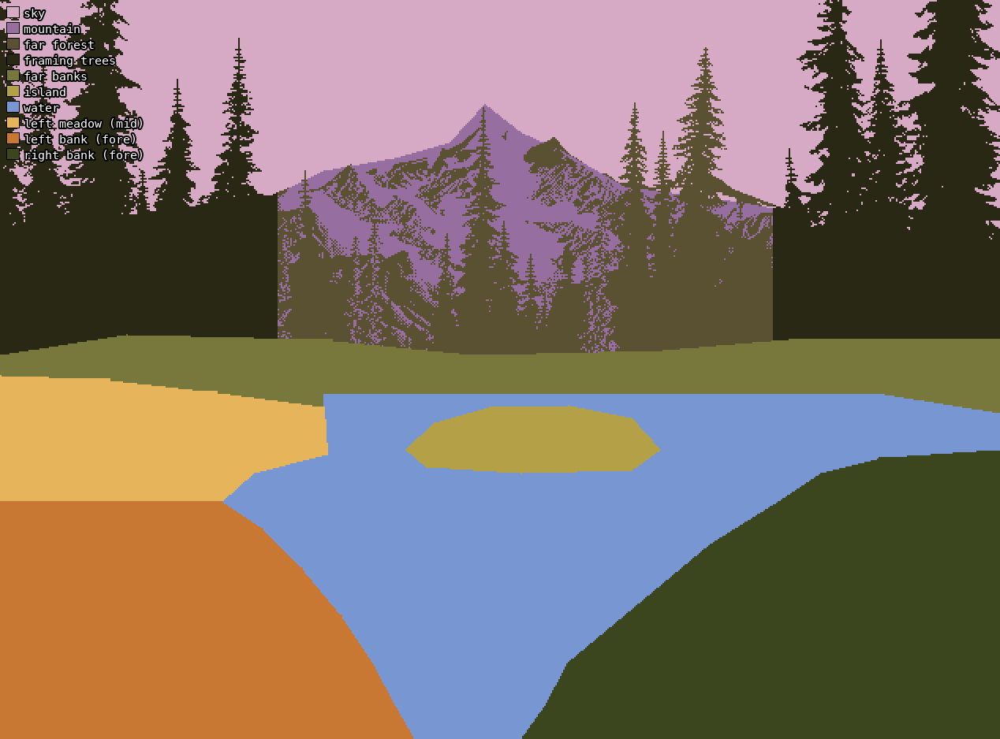
The traced planes, drawn without the painting under it.
Found: a V of foreground banks opening onto water, lit on the left and in shadow on the right. Above it: an island, low far banks, a dark forest, a small peak in a notch, a lot of sky, and tall framing conifers on both sides. In area: sky 18%, water 17%, framing trees 16%, near banks 24%, far forest 9%, and the peak only 4%.
2. Values: notan, squint and the value plan
Question: what is the picture's structure in light and dark, and does each plane stay in its value group?
Use CIE L*. HSV "value" ranks yellows and violets wrongly. Always squint before grouping: dither pixels lie about the value a region reads as.
L = lum(a) # sRGB -> linear -> Y -> L* (util.py)
Lb = gaussian_filter(L, 2.5) # squint
for k in (2, 3, 5):
c = np.sort(KMeans(k, n_init=6, random_state=0).fit(Lb.reshape(-1, 1)[::5]).cluster_centers_.ravel())
cuts = (c[1:] + c[:-1]) / 2 # k=3: centres 16 / 42 / 70, cuts 28.9 / 55.6
q = np.digitize(Lb, cuts)
# the flat value plan: every plane filled with its median squint value
for i in range(len(names)): flat[planes == i] = np.median(Lb[planes == i])
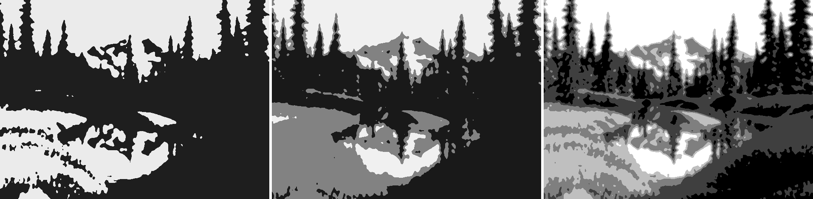
014. Notan in 2, 3 and 5 values. In two it's an hourglass: light at the top pours through the notch around the peak into the light of the water and the lit bank, pinched between two dark masses.
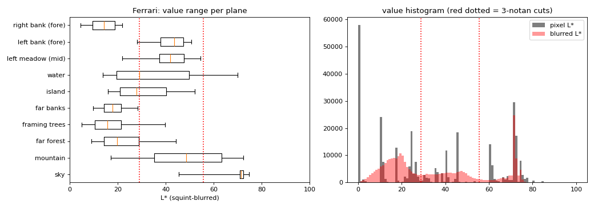
016. Squint value per plane, with the 3-notan cuts in red. Every plane stays inside one or two groups. Only the mountain spans all three.

r_03. Each plane filled with its own median value: ten flat greys, and it's still the picture. This is what to paint first.
Found:
- Balance: 51% dark, 27% middle, 21% light. It's a dark picture with light in the middle.
- Nothing is white. The sky is L* 71–79. The darks go to pure black, 19% of all pixels.
- Planes stay in their groups: flats lighter than slants, slants lighter than uprights.
What it should have changed. This is the number I most wish I'd pointed at my own first render. See section 11.
3. Light: classes, crops and cross-sections
Question: where is the sun, what's lit, what's in shade, and what colour is each?
lightmap.py classes each pixel by value plus warmth (b* > 12 counts as warm):
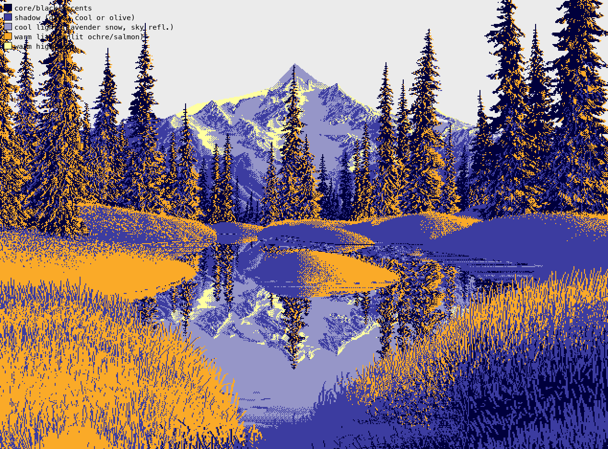
017. Navy = deep shadow, blue = shadow, lavender = cool light (snow in shade, reflected sky), orange = warm lit, yellow = warm highlight. The lit left bank and the shaded right bank are one decision.
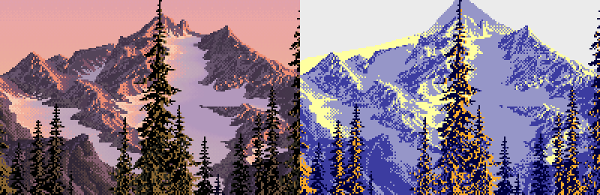
018. The peak at 3×, with its classes: a 1-px salmon line along the lit side of each crest, peach snow in light, lavender in shade.
Dead end. light_probe.py tried to find the sun's side by counting whether lit pixels have dark neighbours to their right or left. It said "RIGHT" for the trees and the peak, against what 018 plainly shows. A neighbour count can't tell which way a face turns: a 1-px lit crest line has dark on both sides. Its first run printed zeros because dark wasn't masked to the plane. The part of it worth keeping is the sky gradient it also prints:
row 0 L=71.5 a=18.5 b=-8.7 col 0 L=74.3 b=10.3
row 80 L=74.6 a=24.8 b=10.7 col 320 L=73.8 b=8.3
row 140 L=79.4 a=17.5 b=21.2 col 560 L=74.7 b=11.8
Found: the sky has no sun in it. It's flat across the columns, and top to bottom it's a hue sweep at nearly constant value, from violet to peach. Value cross-sections through the ground (profiles.py) show the banks brightening as they recede, and the island lit just under its crest:
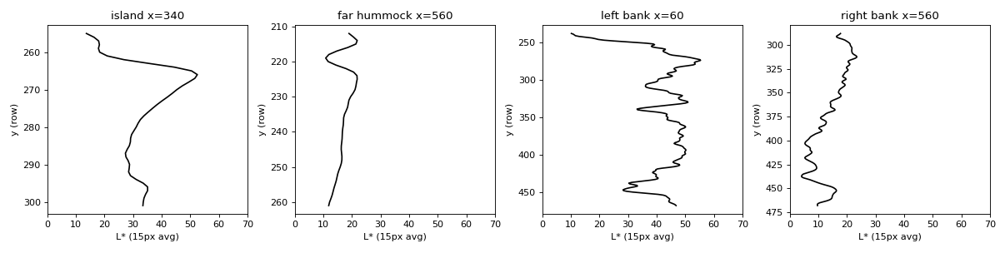
023. Value cross-sections: the island (lit rim, dark base), a far hummock, and the two near banks brightening upward.
4. Reflection: fit it
Question: what exactly does his water do to what it reflects?
Don't guess the rule: fit it. Search for the mirror axis and scale, then compare values by source brightness:
for y0 in np.arange(225, 262, 0.5):
for s in (0.8, 0.85, 0.9, 0.95, 1.0, 1.05, 1.1):
src = np.round(y0 - (ys - y0) * s).astype(int)
e = np.mean(np.abs(Lb[ys][:, xs] - Lb[src][:, xs])) # keep the smallest
# axis row 228 (the far shore), scale 1.00
dL = Lb[ys][:, xs] - Lb[src][:, xs]
# by source value: > 55: -13.1 30-55: -4.5 < 30: +1.2 a*: -5.1
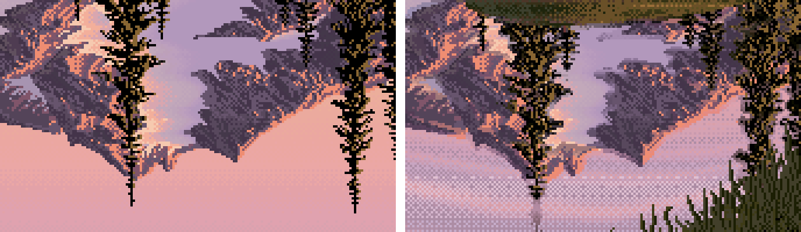
020. The flipped source (left) against his reflection (right): the same shapes, lights pulled down, darks kept, a little cooler, laid in horizontal checker rows.
Changed in my painter: the reflection transform, nearly as measured (top lights about −13, sky about −5, darks kept, a* −4 against the measured −5.1), with horizontal ripple dither. You can see it in the study's final cell, section 11.
5. Form
Question: how is each mass turned in space?
form.py draws isophotes of the squint value inside each mass, with arrows pointing up the brightness gradient:
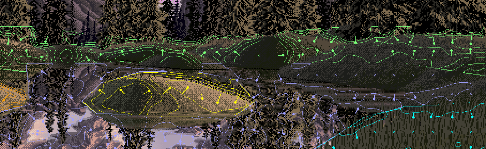
022. The far hummocks and the island (crop). Lozenges: a domed top, a lit band just under the crest, value falling down the front to a dark base, a flat bottom on the water. The peak, by contrast, is flat planes, each one value.
Nothing surprised me here; the cross-sections in section 3 said it better. What I carried into the painter was "one plane, one value": plan the light on the big form. My painter learned that the hard way (story, section 10: 061 → 063).
6. Edges: measure the rise, not the gradient
Question: which edges are hard, which soft, which lost?
Dead end. The ratio of fine to coarse gradient measured the dither:
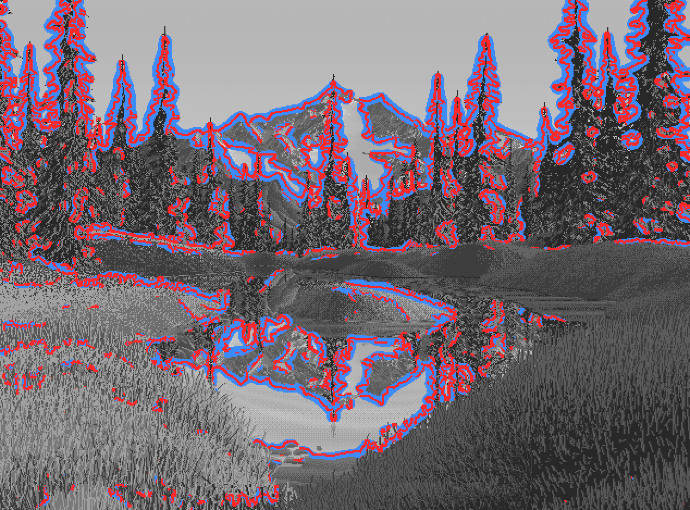
024. Every conifer wrapped in red and blue halos. The dither itself has huge fine-scale gradients.
What worked: remove the dither with a median filter, find mass edges with Canny at σ = 3.5, then measure the 20→80% rise width along each edge's normal, keeping only edges with more than 18 L* of contrast.
E = canny(median_filter(L, 3), sigma=3.5, low_threshold=4, high_threshold=8)
t = np.linspace(-8, 8, 33) # 33 samples across the edge
prof = map_coordinates(Lm, [ys[:, None] + uy[:, None] * t, xs[:, None] + ux[:, None] * t], order=1)
# width between the 20% and 80% crossings: <= 2 px hard, 2-4.5 middle, > 4.5 soft; keep amp > 18 L*

027. Red = hard, yellow = middle, blue = soft. Hard, found edges are silhouettes against light. Dark against dark is lost.
Found:
- Silhouettes against the sky are 50% hard.
- Bank and grass interiors are 58–64% soft.
- Lost edges, as ΔL* across the boundary: far banks into their own reflections 0.3, framing trees into the far forest 2.5.
Find edges against the light; lose them in the dark.
7. Clusters: the atlas, and counting
Question: what does each material look like, pixel by pixel? This is the instrument I'd keep if I could keep only one.
atlas.py cuts a 32×32 window from each material, magnifies it 7×, and isolates its three commonest colours beside it:
for col, _ in Counter(map(tuple, w.reshape(-1, 3))).most_common(3):
m = np.all(w == col, axis=2); t = np.full_like(w, 128); t[m] = col
t[~m] = (40, 40, 40) if np.mean(col) > 90 else (200, 200, 200) # the colour alone, on grey
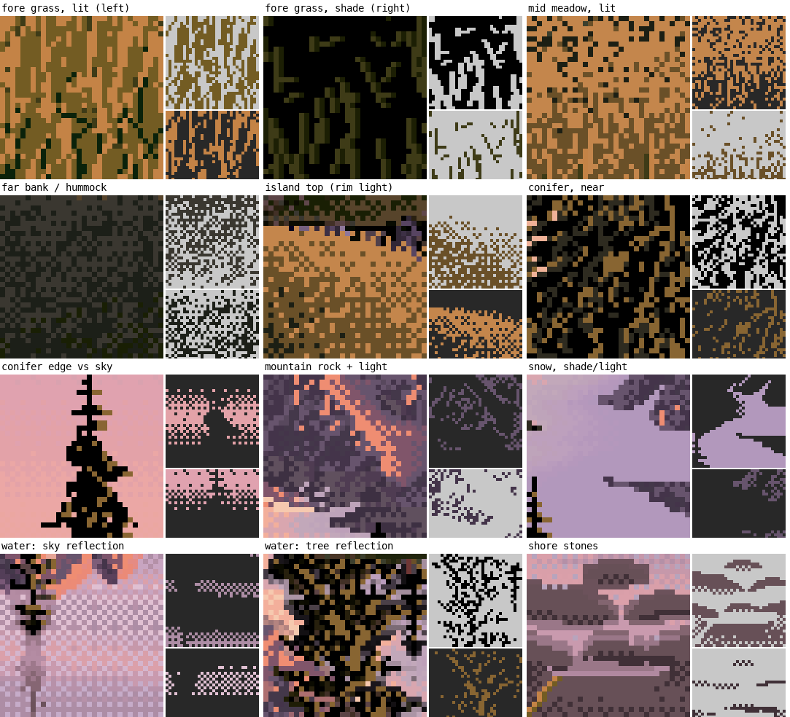
028. The atlas. Near grass lit and shaded, mid meadow, far bank, island rim, conifer, conifer edge against sky, peak rock, snow, water reflecting sky, water reflecting trees, shore stones.
Then count. clusters.py measures same-colour connected clusters and runs per plane. dither.py counts every 2×2 pattern:
checker = eq(i00, i11) & eq(i01, i10) & ~eq(i00, i01) # a 2x2 checker block
vstripe = eq(i00, i10) & eq(i01, i11) & ~eq(i00, i01) # a vertical stroke pair
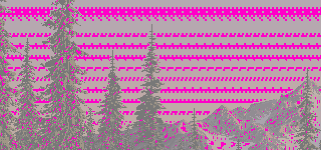
r_11. Every 2×2 checker block in magenta: in the sky, only in single rows at the seams between flat bands.
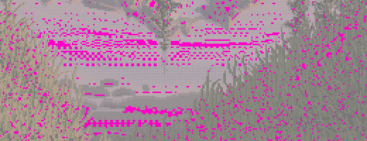
r_11. The water near the shore stones: checker in horizontal rows. In the grass, scattered, a few percent.
Found:
| plane | colours covering 90% | vertical neighbour same | 2×2 checker | vertical stripe |
|---|---|---|---|---|
| near lit grass | 4 | 0.70 | 4.6% | 33% |
| near shaded grass | 4 | 0.68 | 4.1% | 31% |
| conifers | 3 | 0.56 | 7.1% | 8% |
| sky | 8 | 0.47 | 24.5% | 0.3% |
| water | 69 | 0.33 | 8.4% | 6% |
- Near lit grass is four colours in fixed proportions: base ochre 38%, mid-brown stroke 35%, olive 11%, black-green gap 12%.
- Conifers are black 61%, ochre 22%, dark 14%.
Reading the tiles against the counts. This is the finding the other students used most. Ferrari's contrast lives inside the single stroke. In squint his masses sit close in value (section 2). Up close, every mark carries its own light and dark: a grass blade beside its black gap, an ochre fleck on black, a salmon crest line on violet, a stone's light top row over its dark bottom row. The nearest, most textured planes use the fewest colours. Colour count goes where the light is: the peak and the water.
Changed in my painter: I stopped inventing grass. I transcribed his proportions as thresholds on a vertically stretched noise, so 38 / 35 / 11 / 12 came out as vertical 1-px strokes:
c_lit = np.select([Tv < 0.12, Tv < 0.23, Tv < 0.58], [g0, g1, g2], g4) # gap / olive / mid stroke / base
c_sh = np.select([Tv < 0.28, Tv < 0.60], [k, g0], g1) # black / black-green / olive

064. My study painter's near lit grass (left) against his (right), at 6×. The same four colours and proportions. The shaded bank matched him number for number: 4 colours against 4, vertical coherence 0.67 against 0.68, mean cluster 5.2 against 5.6 px. The lit bank's strokes came out about half as long as his.
8. Palette: sort colours by material
Question: which colours does each material use, and how are they organised?
palette.py assigns every colour to the plane that uses it most, sorts each group by L*, and plots all of them in a*b*:

029. Colours by material, sorted by value, swatch height by usage.
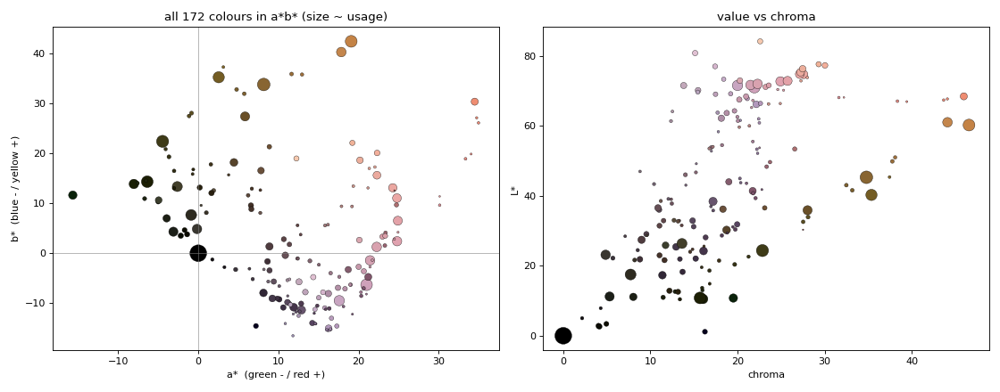
030. Two hue families: sun (ochre, orange) and air (violet, pink). The greens are all dark olives. Chroma peaks at mid values and collapses in the darks.
Changed in my painter: 32 colours built as ramps per material and per light: a warm ramp in light and a cool ramp in shade, mixing only neighbouring colours of one ramp. The sky was an iso-luminant 6-colour hue sweep, and distant rock had its darks lifted to L* 37.
9. Depth
Question: what changes from near to far?
depth.py tabulates each plane in depth order: median value and range, squint contrast, chroma and hue, and fine detail.
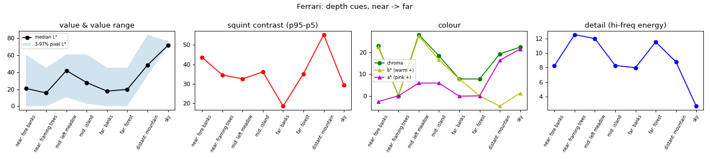
r_12. Ferrari's depth cues, near to far. The shaded band in the left panel is the 3–97% pixel range. Its floor stays at black through the far forest, then jumps to L* 36 at the mountain.
Found: in order of strength:
- Overlap: seven layers.
- The black point rises: black through the far forest, L* 36 at the peak. Atmosphere is lifted darks more than lowered lights.
- Hue: ochre near, olive in the middle, violet far (b* +22 → +8 → −5).
- Texture scale: strokes, then ticks, then speckle, then flat.
10. Silhouettes: count the runs
Question: how does he draw an outline in pixels? I ran this after David (the critic) pointed out that the medium favours short straight runs and clean steps.
top = [np.flatnonzero(mask[:, x])[0] for x in range(x0, x1)] # top edge, column by column
for i in range(1, len(top)):
dy = int(top[i] - top[i - 1])
if dy == 0: run += 1
else: segs.append((run, dy)); run = 1
# classify each (run, step): 1:1, 2:1, a flat run of 3+ then one step, a drop of 3+ ...
Found:
- His crest is 41% 1:1 steps and 53% flat runs of 3–6 px then one step.
- The right shoulder is 43% 1:1 and 29% 2:1.
- There's no noise: each crest is straight segments, each with one consistent step pattern.
Magnifying the bottoms of masses found a second rule:

041. The island meets the water on a dead-level line, with horizontal streaks at the join.

043. Shore stones: flat top, flat bottom, 45° ends, a light top row over a dark bottom row. Two values in one stroke.
Changed in my painter: pixelgeo.py simplifies a silhouette to a polygon, snaps every edge to the nearest clean slope (flat, 5:1 … 1:1 … 1:4, vertical), and solves by least squares for vertices that keep the shape closed:
D = UDIRS[np.argmax(U @ UDIRS.T, 1)] # the nearest clean direction for each edge
# unknowns: v0 and a length t_i per edge; vertex_i = v0 + sum_{j<i} t_j D_j, fit to the original vertices
A[2 * n, 2:] = 30 * D[:, 0]; A[2 * n + 1, 2:] = 30 * D[:, 1] # heavily weighted: the polygon must close
sol, *_ = np.linalg.lstsq(A, b, rcond=None)
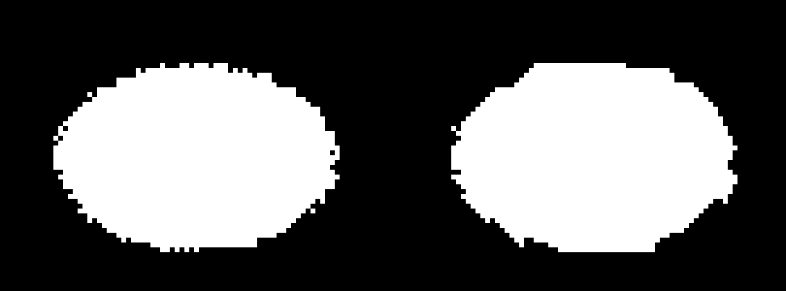
044. A noisy ellipse (left) re-drawn with clean-slope runs (right).
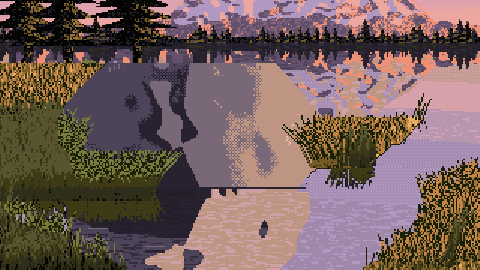
063. In the study painter: the close boulder's outline and its reflection as clean runs, sitting on a flat base with a 1-px dark contact line.
In the painter this became: every mass meeting water gets a flat base and a dark lip, and blades are straight runs with one change of slope.
11. Turn the instruments on yourself
The last step of my brief is the one I'd recommend to anyone: run the same code, unchanged, on your own paintings. check_sheets.py and compare_plates.py do it for a painter that records a plane map for every cell. Here's what it said about mine.
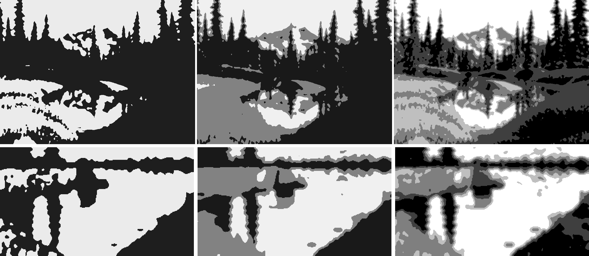
070. Ferrari's notan (top) against my study painter's base cell, with his cuts. The hourglass transferred. The balance didn't: his is dark with light in the middle, mine is light with a dark top band.
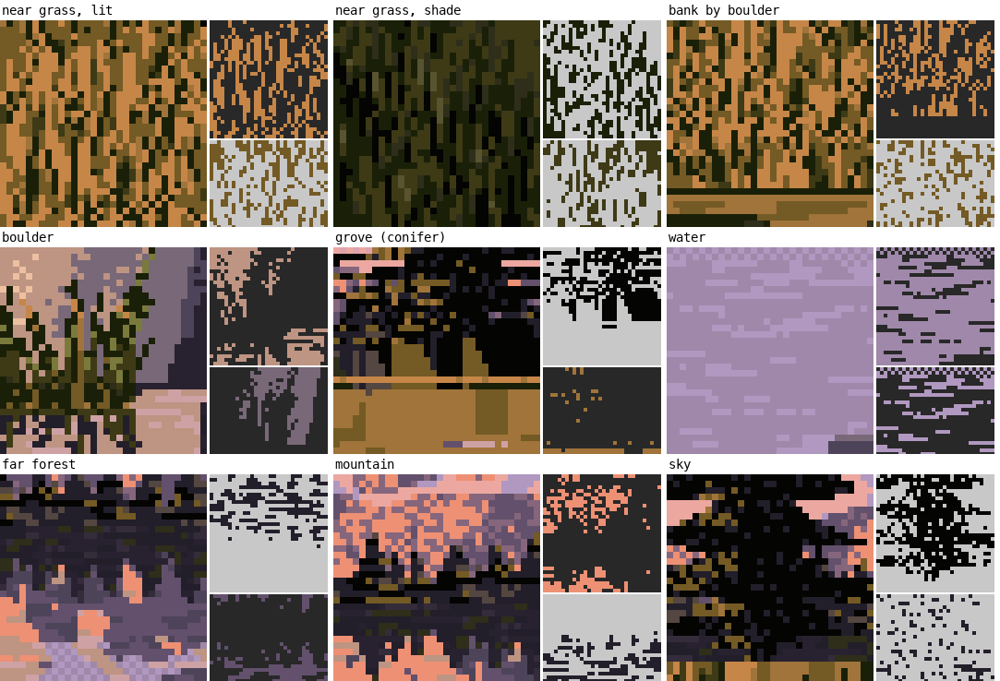
075. My atlas, with the same windows by material. Near shaded grass and conifers are close to his. The water was too checkered: 27% of 2×2 blocks against his 8%.
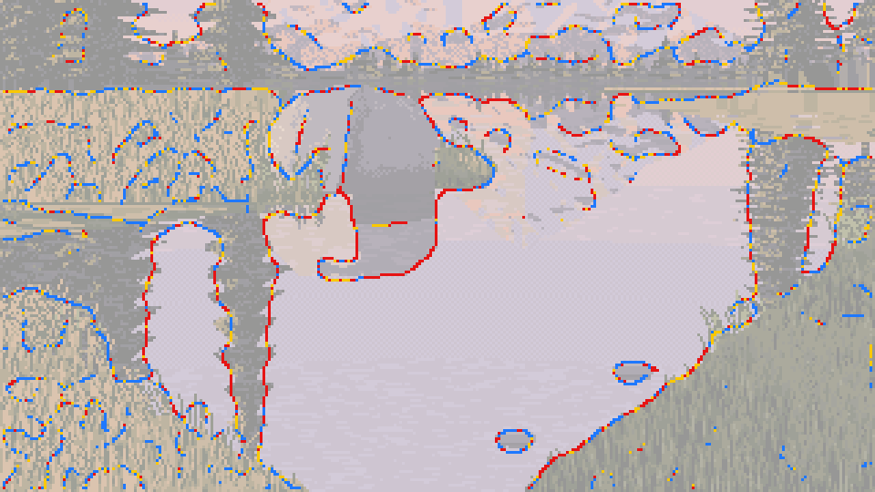
076. My edges: the same distribution as his. Hard against light water, lost dark into dark.
The comparison over all 19 cells, as medians (mine / his):
| plane | squint L* | colours covering 90% | vertical neighbour same | mean cluster (px) |
|---|---|---|---|---|
| near shaded grass | 15.7 / 14.2 | 4 / 4 | 0.67 / 0.68 | 5.2 / 5.6 |
| near lit grass | 39.2 / 43.4 | 4 / 4 | 0.58 / 0.70 | 3.5 / 6.2 |
| conifers (my grove / his framing trees) | 12.0 / 15.6 | 3 / 3 | 0.51 / 0.56 | 4.6 / 5.2 |
| mountain | 56.6 / 48.4 | 5 / 15 | 0.55 / 0.42 | 5.3 / 3.3 |
| boulder, against his rock | 32.1 / 48.4 | 4 / 15 | 0.75 / 0.42 | 10.7 / 3.3 |
| water | 59.0 / 29.0 | 12 / 69 | 0.37 / 0.33 | 2.5 / 2.3 |
And run the notan on your first render, not only your last. I didn't, and here's what I missed, measured today with his cuts on my own intermediates:
| study image | what it was | dark / middle / light |
|---|---|---|
| Ferrari | 51 / 27 / 21% | |
| 033 | my first real render | 51 / 36 / 13% |
| 034 | the promontory added | 46 / 38 / 17% |
| 040 | the V of banks, first try | 43 / 20 / 37% |
| 047 | the V, designed in the picture plane | 23 / 23 / 54% |
| 065 | a grove added | 30 / 29 / 41% |
| 073 | the final base cell | 33 / 30 / 37% |

033. My first real render: 51% dark, the master's balance, from a big dark boulder, its shadow and its reflection in the middle of the frame. Every step after this was right about something, and nearly every one made the picture lighter.

073. My study painter's final base cell (medium, left light, 10 m, seed 1): the V, a reflected peak, a grove on each far bank. 33% dark.
Why it drifted, once I knew where to look: with the task's camera, looking 10° down, every change that opened the view put more reflected sky into the frame, and his sky is L* 71. What his top half has instead is trees: framing trees and far forest, 25% of his picture. The camera maths says a 20 m spruce 80 m away stands about 86 px tall in a 320-px-wide frame. I'd drawn my far trees 4–13 px tall. The next day I tried true-size trees in a quick test painter, much rougher than the study's. With the same camera, the notan went from 25% dark (toy-size far trees and no grove) to 53% (true-size far trees, a grove and framing trees). Put your camera maths into every size, and let the frame crop what's tall.
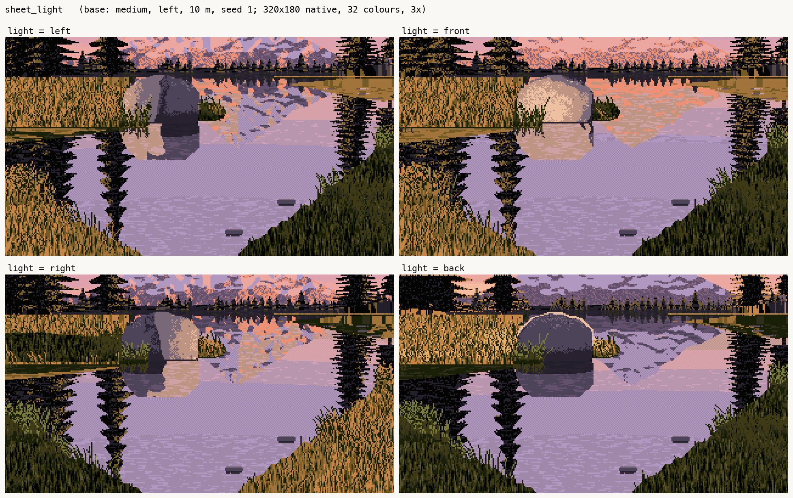
077. My study painter's light sheet (left, front, right, back): the best my painter did.
Where the instruments stop
- They tell you what's there, not how to make it. My painter copied the numbers faithfully where a number could be copied (grass proportions, the reflection transform, crest runs, the black point) and came close to his statistics there. Where nothing could be counted, it didn't: the faceted rock, the conifers' broken reflections, the drawing of a close boulder.
- Planes need a human. Every per-plane number depends on a traced map, and mine has crude rectangles for the framing trees.
- Statistics can't read direction. Use them to confirm what a crop shows, not to discover it (the light probe).
- One painting. Everything here comes from one Ferrari picture. I never looked at his other scenes. Before you trust a number as "Ferrari's", measure it on a second picture of his.